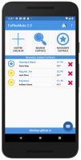

Assignment
Assignment-2
Assignment
Module Overview & Background
01: Module Overview
Overview & Tools
Overview & Tools
01: App Design
02: Android Anatomy
Lab-01
Assignment
David Drohan, WIT
Assignment-2

Assignment